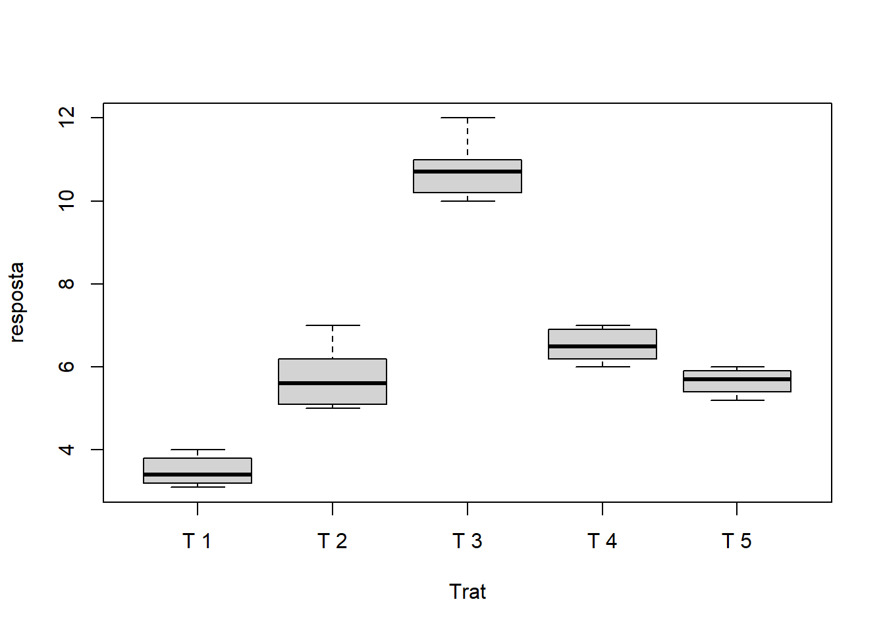

Capítulo 5 Noções básicas
5.1 Objetos
5.1.1 Vetores
Unidade básica do R
a=c(1,2,3,4)
a## [1] 1 2 3 4#ou
b=c("a","b","c")
b## [1] "a" "b" "c"is.vector(a)## [1] TRUEclass(a)## [1] "numeric"str(a)## num [1:4] 1 2 3 45.1.2 Fatores
d=factor(c("a","a","a","b","b","b","c","c","c"))
d## [1] a a a b b b c c c
## Levels: a b cstr(d)## Factor w/ 3 levels "a","b","c": 1 1 1 2 2 2 3 3 3table(d)## d
## a b c
## 3 3 35.1.3 Matrizes
matrix(rep(1,12),ncol=4)## [,1] [,2] [,3] [,4]
## [1,] 1 1 1 1
## [2,] 1 1 1 1
## [3,] 1 1 1 15.1.4 data.frame
data.frame(f1=1:10,
f2=11:20)## f1 f2
## 1 1 11
## 2 2 12
## 3 3 13
## 4 4 14
## 5 5 15
## 6 6 16
## 7 7 17
## 8 8 18
## 9 9 19
## 10 10 205.1.5 Lista
lista=list(f1=1:10,
f2=11:20)
lista$f1## [1] 1 2 3 4 5 6 7 8 9 10lista$f2## [1] 11 12 13 14 15 16 17 18 19 205.2 Manipulação de objeto
b[1]## [1] "a"resposta=c(3.1,3.2,3.4,3.8,4,5.0,5.1,5.6,6.2,7,10,10.2,10.7,11,12,6,6.5,6.2,7,6.9,20,5.2,5.6,5.8,6)
Trat=rep(c(paste("T",1:5)),e=5)car::Boxplot(resposta~Trat)## Warning in Boxplot.default(mf[[response]], x, id = list(method = id.method, :
## NAs introduzidos por coerção## [1] "21"car::Boxplot(resposta[-21]~Trat[-21])## Warning in Boxplot.default(mf[[response]], x, id = list(method = id.method, :
## NAs introduzidos por coerção
dados=data.frame(Trat,resposta)
with(dados[-21,],boxplot(resposta~Trat))Removendo tratamento
dados=data.frame(Trat,resposta)
with(dados[!Trat=="T 5",],boxplot(resposta~Trat))
Criar um sequência repetida de observações
O primeiro argumento indica o valor que será repetido e o segundo argumento será o número de vezes que será repetido
rep(0,10) # criando uma sequência de 10 observações 0## [1] 0 0 0 0 0 0 0 0 0 0rep("T",10) # criando uma sequência de 10 observações T## [1] "T" "T" "T" "T" "T" "T" "T" "T" "T" "T"Criando uma sequência de cinco observações 1 e 2, sendo cada uma repetida de forma alternada
rep(c(1,2),5)## [1] 1 2 1 2 1 2 1 2 1 2Criando uma sequência de cinco observações 1 e 2, sendo cada uma repetida de forma sequencial (5 primeiras observações são 1 e as demais 2).
rep(c(1,2),e=5)## [1] 1 1 1 1 1 2 2 2 2 2Como criar um sequência númerica com intervalo fixo?
seq(1,100,1) # sequencia de 1 a 100 com intervalo de 1 em 1## [1] 1 2 3 4 5 6 7 8 9 10 11 12 13 14 15 16 17 18
## [19] 19 20 21 22 23 24 25 26 27 28 29 30 31 32 33 34 35 36
## [37] 37 38 39 40 41 42 43 44 45 46 47 48 49 50 51 52 53 54
## [55] 55 56 57 58 59 60 61 62 63 64 65 66 67 68 69 70 71 72
## [73] 73 74 75 76 77 78 79 80 81 82 83 84 85 86 87 88 89 90
## [91] 91 92 93 94 95 96 97 98 99 100